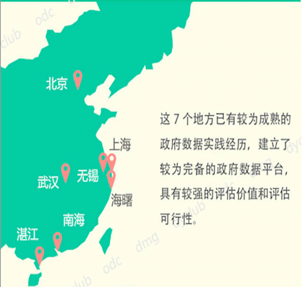
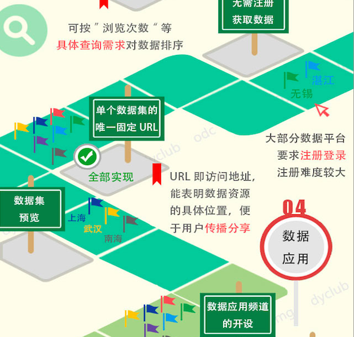
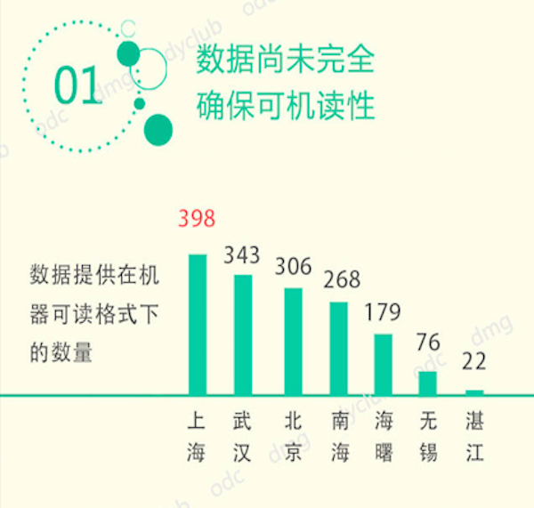

什么是「中国开放数据探显镜」
探显镜，是「探险」+「显微镜」的组合词，意味着全面而深度的探索，同时不失对细节的洞察。

全面扫描
透过检索文献资料、媒体报道、搜索引擎，全面扫描当前中国地方已经开展的开放数据实践，描绘中国地方政府开放数据发展的全貌。

深度探测
基于国情建立评估框架，探测中国目前各地方开放数据发展的现况，深度考评各地方开放数据工作的水平

细致显微
显微中国地方政府开放数据的实际问题和典型方案，细致呈现地方政府开展开放数据实践的工作细节。